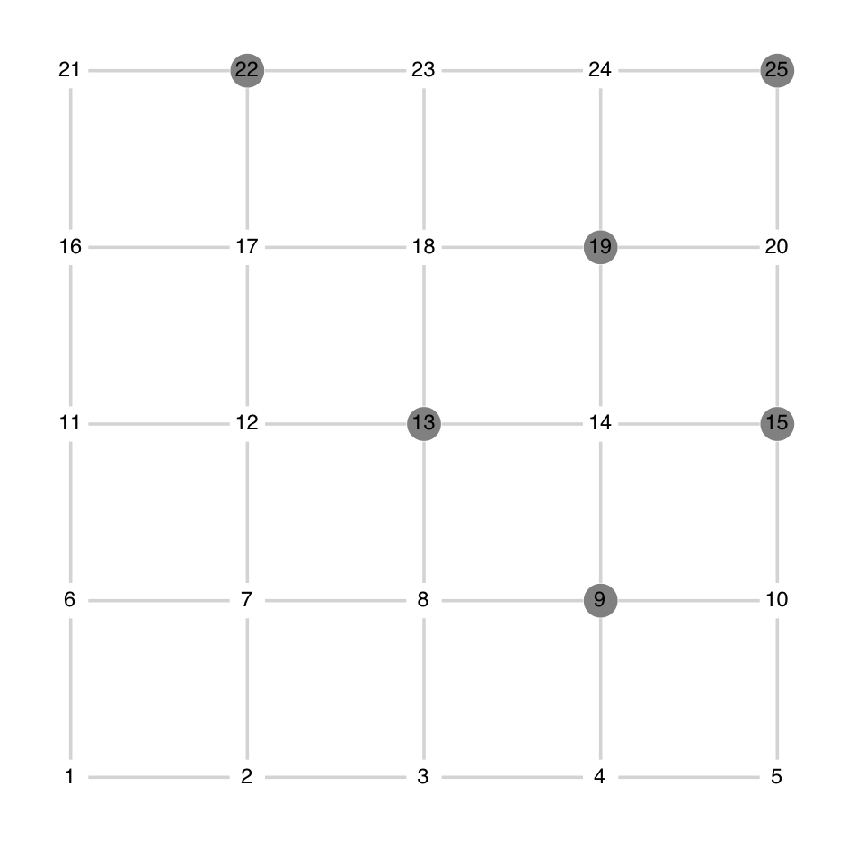

Graph point processes
PartialRejectionSampling.AbstractGraphPointProcess — TypeAbstractGraphPointProcess{T<:Vector{Float64}} <: AbstractPointProcess{T}Abstract type encoding point processes defined on graphs
PartialRejectionSampling.GraphNode — TypeGraphNode{T<:Int64} <: AbstractDiscreteWindow{T}Structure with unique field idx representing the index of the vertex of a graph.
Hard core graph
PartialRejectionSampling.HardCoreGraph — TypeHardCoreGraph{T<:Integer} <: AbstractGraphPointProcess{T}Concrete type representing a point process on the vertices of a graph $=(V, E)$ parametrized by $\beta \geq 0$ which characterizes the distribution on the independent sets of graph, where each vertex is present with marginal probability $\frac{\beta}{1+\beta}$.
In other words, it can also be viewed as the product distribution $\operatorname{Bernoulli}(\frac{\beta}{1+\beta})^{\otimes |V|}$ on the vertices of graph conditioned on forming an independent set,
\[ \mathbb{P}\!\left[ \mathcal{X} = X \right] \propto \prod_{x\in X} \frac{\beta}{1+\beta} 1_{X \text{forms an independent set}}.\]
See also
- Section 7.2 of Heng Guo , Mark Jerrum , Jingcheng Liu (2019),
- Example 4.1 of Sarat B. Moka , Dirk P. Kroese (2020),
PRS.HardCorePointProcess, the spatial counterpart ofPRS.HardCoreGraph.
Example
A realization from a $5\times 5$ grid graph, with $\beta = 0.5$.

PartialRejectionSampling.HardCoreGraph — MethodHardCoreGraph(
graph::LG.SimpleGraph{T},
β::Real
) where {T<:Integer}Construct a PRS.HardCoreGraph.
using PartialRejectionSampling
using LightGraphs; const LG = LightGraphs
g, β = LG.grid([5, 5]), 1
PRS.HardCoreGraph(g, β)
# output
HardCoreGraph{Int64}
- graph = {25, 40} undirected simple Int64 graph
- β = 1.0PartialRejectionSampling.generate_sample — Methodgenerate_sample(
[rng=Random.AbstractRNG,]
pp::HardCoreGraph{T}
)::Vector{T} where {T}Generate an exact sample from the PRS.SinkFreeGraph.
Default sampler is PRS.generate_sample_prs.
PartialRejectionSampling.generate_sample_prs — Methodgenerate_sample_prs(
[rng=Random.AbstractRNG,]
pp::HardCoreGraph{T}
)::Vector{T} where {T}Sample from PRS.HardCoreGraph using Partial Rejection Sampling (PRS), see Section 7.2 of Heng Guo , Mark Jerrum , Jingcheng Liu (2019)
See also
- Example 4.1 of MoKr20.
Example
An illustration of the procedure on a $5\times 5$ grid graph.
- red: variables involved in constraints violation (gray neighboring nodes)
- orange: variables to be resampled (red nodes and their neighborhood)

Rooted spanning forests
PartialRejectionSampling.RootedSpanningForest — TypeRootedSpanningForest{T<:LG.SimpleDiGraph{Int64}} <: AbstractGraphPointProcess{T}Concrete type reprensenting a point process defined on the edges of a connected graph characterizing the uniform distribution on the directed spanning forests of graph rooted at roots.
It can be viewed as a the product distribution of the uniform distribution on the set of neighbors of each vertex conditioned on forming no cycles.
The object has two fields:
graph::LG.SimpleGraph{Int64}roots::Vector{Int64}
See also
- Section 4.2 of Heng Guo , Mark Jerrum , Jingcheng Liu (2019).
Example
A realization from a $5\times 5$ grid graph with roots=[13].
PartialRejectionSampling.RootedSpanningForest — MethodRootedSpanningForest(
graph::LG.SimpleGraph{T},
roots::Union{Nothing,T,AbstractVector{T},AbstractSet{T}}=nothing
) where {T<:Int}Construct a PRS.RootedSpanningForest model on a connected graph, rooted at roots. If roots === nothing, a random vertex is selected uniformly at random among LG.vertices(g) and considered as roots.
using PartialRejectionSampling
using LightGraphs; const LG = LightGraphs
g, roots = LG.grid([5, 5]), [1, 2, 3]
rsf = PRS.RootedSpanningForest(g, roots)
# output
RootedSpanningForest{LightGraphs.SimpleGraphs.SimpleDiGraph{Int64}}
- graph = {25, 40} undirected simple Int64 graph
- roots = [1, 2, 3]PartialRejectionSampling._generate_sample_rooted_spanning_forest_prs — Method_generate_sample_rooted_spanning_forest_prs(
rng::Random.AbstractRNG,
graph::LG.SimpleGraph{T},
roots
)::LG.SimpleDiGraph{T} where {T}Generate a rooted spanning forest from a connected graph with prescribed roots, uniformly at random among all rooted spanning forests rooted at roots, using Partial Rejection Sampling.
See also
- Section 4.2 of Heng Guo , Mark Jerrum , Jingcheng Liu (2019).
PartialRejectionSampling._generate_sample_rooted_spanning_forest_wilson — Method_generate_sample_rooted_spanning_forest_wilson(
[rng::Random.AbstractRNG,]
graph::LG.SimpleGraph{T},
roots
)Generate a spanning forest of a connected graph with prescribed roots, uniformly at random among all rooted spanning forests rooted at roots, using Wilson's algorithm.
See also
PartialRejectionSampling.directed_forest_from_successors — Methoddirected_forest_from_successors(successors)::LG.SimpleDiGraphReturn a directed graph of size length(successors) with edges i => successors[i].
PartialRejectionSampling.generate_sample — Methodgenerate_sample(
[rng::Random.AbstractRNG,]
pp::RootedSpanningForest
)Generate an exact sample from the PRS.RootedSpanningForest.
Default sampler is PRS.generate_sample_prs.
PartialRejectionSampling.generate_sample_prs — Methodgenerate_sample_prs(
[rng::Random.AbstractRNG,]
pp::RootedSpanningForest{T}
)::T where {T<:LG.SimpleDiGraph{Int64}}Generate a rooted spanning forest of pp.graphwith prescribedpp.roots, uniformly at random among all rooted spanning forests rooted atpp.roots`, using Partial Rejection Sampling (PRS).
See also
- Section 4.2 of Heng Guo , Mark Jerrum , Jingcheng Liu (2019).
Example
An illustration of the procedure on a $5\times 5$ grid graph, with roots=[13]
- red: variables involved in constraints violation (edges forming a cycle)
- orange: variables resampled (edges originating from a red/orange node)

Sink free graph
PartialRejectionSampling.SinkFreeGraph — TypeSinkFreeGraph{T<:LG.SimpleDiGraph{Int64}} <: AbstractGraphPointProcess{T}Concrete type representing a point process on the edges of a graph characterizing the uniform distribution on the orientations of the edges conditioned on the absence of sinks.
See also
- Section 4.1 of Heng Guo , Mark Jerrum , Jingcheng Liu (2019).
Example
A realization from a $5\times 5$ grid graph
PartialRejectionSampling.SinkFreeGraph — MethodSinkFreeGraph(graph::LG.SimpleGraph{T}) where {T<:Int}Construct a PRS.SinkFreeGraph.
using PartialRejectionSampling
using LightGraphs; const LG = LightGraphs
sfg = PRS.SinkFreeGraph(LG.grid([5, 5]))
# output
SinkFreeGraph{LightGraphs.SimpleGraphs.SimpleDiGraph{Int64}}
- graph = {25, 40} undirected simple Int64 graphPartialRejectionSampling.generate_sample — Methodgenerate_sample([rng::Random.AbstractRNG,] pp::SinkFreeGraph)Generate an exact sample from the PRS.SinkFreeGraph.
Default sampler is PRS.generate_sample_prs.
PartialRejectionSampling.generate_sample_prs — Methodgenerate_sample_prs(
[rng::Random.AbstractRNG,]
pp::SinkFreeGraph{T}
)::T where {T}Generate an orientated version of pp.graph uniformly at random among all possible orientations conditioned on the absence of sinks, using Partial Rejection Sampling (PRS).
See also
- Section 4.1 of Heng Guo , Mark Jerrum , Jingcheng Liu (2019).
Example
A illustration of the procedure on a $5 \times 5$ grid grah.
- red: variables involved in constraints violation (orientation of the edges pointing to a sink node)
- orange: variables resampled (orientation of the previous edges)

Ising model
PartialRejectionSampling.Ising — TypeIsing{T<:Int} <: AbstractGraphPointProcess{T}The Ising model characterizes a point process defined on the vertices of a graph $(V, E)$ with joint density proportional to
\[ \mathbb{P}\!\left[ \mathcal{X}=X \right] \propto \prod_{i \in V} \exp(h_i x_i) \prod_{\{i, j\} \in E} \exp(J x_i x_j)\]
where $(h_i)_{i\in V}$ are called magnetization paremeters and $J$ the interaction coefficient ($J \gtreqless 0$ characterizes ferro/antiferro magnetic interactions).
Example
A realization from a $5\times 5$ grid graph, with $h = 0.2, J = 0.1$.

PartialRejectionSampling.Ising — MethodIsing(
dims::Vector{T},
J::Real,
h::Union{Real,Vector{Real}}=0;
periodic::Bool=true
) where {T<:Int}Construct PRS.Ising on a grid graph with dimension dims, interaction parameter J and magnetization h.
Periodic boundary conditions on the grid graph are set according to periodic.
using PartialRejectionSampling
dims = [5, 5]
J, h = 0.01, 0
PRS.Ising(dims, J, h; periodic=true)
# output
Ising{Int64}
- graph = {25, 50} undirected simple Int64 graph
- J = 0.01 (interaction)
- h = 0.0 (magnetization)PartialRejectionSampling.Ising — MethodIsing(
graph::LG.SimpleGraph{T},
J::Real,
h::Union{Real,Vector{Real}}=0
) where {T<:Int}Construct PRS.Ising on graph with interaction parameter J and magnetization h.
using PartialRejectionSampling
using LightGraphs; const LG = LightGraphs
graph = LG.grid([5, 5])
J, h = 0.01, 0
PRS.Ising(graph, J, h)
# output
Ising{Int64}
- graph = {25, 40} undirected simple Int64 graph
- J = 0.01 (interaction)
- h = 0.0 (magnetization)PartialRejectionSampling.generate_sample! — Methodgenerate_sample!(
rng::Random.AbstractRNG,
state::AbstractVector{T},
indices,
ising::Ising{T}
) where {T<:Int}Generate an exact sample from the marginal distribution of each states of the PRS.Ising model ising at the prescribed indices.
PartialRejectionSampling.generate_sample — Methodgenerate_sample(
[rng::Random.AbstractRNG,]
pp::Ising{T},
idx::T
)::T where {T<:Int}Generate an exact sample from the marginal distribution of state $i=$ idx of pp.
More specifically,
\[ x_i \sim \operatorname{Bernoulli}_{-1, 1} (\sigma(h_i)),\]
where $\sigma$ denotes the sigmoid function.
PartialRejectionSampling.generate_sample_conditional! — Methodgenerate_sample_conditional!(
rng::Random.AbstractRNG,
state::AbstractVector{T},
i::T,
ising::Ising{T}
) where {T<:Int}Generate an exact sample from the conditional distribution of the state $x_i$ given its neighboring states in ising.graph. More specifically,
\[ x_i \mid x_{N(i)} \sim \operatorname{Bernoulli}_{-1, 1} (\sigma(h_i + J \sum_{j \in N(i)} x_j)), where ``\sigma`` denotes the [sigmoid function](https://en.wikipedia.org/wiki/Sigmoid_function).\]
PartialRejectionSampling.generate_sample_prs — Methodgenerate_sample_prs(
[rng::Random.AbstractRNG,]
pp::Ising
)Generate an exact sample form pp using Partial Rejection Sampling (PRS), see Section 4.2 of Heng Guo , Mark Jerrum , Jingcheng Liu (2019).
Default sampler is PRS.generate_sample_grid_prs.
See also
PartialRejectionSampling.bayes_filter — Methodbayes_filter(
rng::Random.AbstractRNG,
ising::Ising{T},
state::AbstractVector{T},
i::T,
R::Set{T}
)::BoolThis function is used as a subroutine of PRS.generate_sample_gibbs_perfect.
PartialRejectionSampling.generate_sample_gibbs_perfect — Methodgenerate_sample_gibbs_perfect(
[rng::Random.AbstractRNG,]
ising::Ising{T}
)::Vector{T} where {T<:Int}Generate an exact realization of the PRS.Ising model using a tailored implementation of the perfect Gibbs sampler of Weiming Feng , Heng Guo , Yitong Yin (2019).